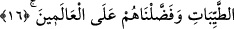

16. Andolsun ki biz, İsrailoğullarına Kitap, hüküm ve peygamberlik verdik. Onları
güzel rızıklarla besledik ve onları dünyalara üstün kıldık.
“Andolsun biz, İsrâîl oğullarına kitap”, Tevrat, “hüküm”, nazarî ve amelî hikmet,
dinde fıkıh bilgisi yahut mülk ve yönetim kendilerinde olduğunda insanların dâvâları
arasında hüküm vermeyi “ve peygamberlik verdik.” Zira peygamberler, başka hiçbir
millette olmadığından daha çok İsrailoğullarında vardı. İbrâhîm (a.s.) peygamberlerin
soy ağacı idi. “Onları” kudret helvası ve bıldırcın gibi “güzel rızıklarla besledik ve
onları âlemlere üstün kıldık.” Çünkü onlara denizi yarma, bulutla gölgelendirme ve
benzerleri gibi başkalarına vermediğimiz nice mûcizeler verdik.
Müfti Sa’dî şöyle demiştir: Belki de burada evlâ olan “kitab” kelimesinin cins
mânâsına hamledilmesidir. Böylece bu ifâde Zebur ve İncil’e de şâmil olur. Çünkü
Mûsâ (a.s.), Dâvûd (a.s.) ve İsâ (a.s.) hep İsrailoğullarından idiler. Bu ifâdeden onların
din ve sevap bakımından başkalarına üstün kılınmış olduğu lazım gelmez. Yahut kendi
zamanlarının âlemlerine üstün kılınmışlardır. Zira İsrailoğulları döneminde Allah
katında onlardan daha kıymetli kimse yoktu. Bu husus bir önceki sûrede izah edilmiştir.
17. Din konusunda onlara açık deliller verdik. Ama onlar kendilerine ilim
geldikten sonra, aralarındaki çekememezlik yüzünden ayrılığa düştüler. Şüphesiz
Rabbin, ayrılığa düştükleri şeyler hakkında kıyâmet günü aralarında hüküm
verecektir.
“Ve onlara bu dîn işinde açık delîller” ve kâhir mûcizeler “verdik.” Buradaki
“min”, “fî” mânâsındadır. Cum’a sûresi 9. âyetteki “Ey îmân edenler! Cuma günü
namaz için çağrıldığınız zaman Allah’ı anmaya koşun” ifâdesindeki “min” de
aynıdır.
İbn Abbâs şöyle demiştir: Bu açık deliller Peygamber (s.a.)’in peygamber olarak
gönderilmesini bilmeleri ve ona dâir diğer bilgilerdir. Özellikle Peygamberimiz
(s.a.)’in Mekke’den Yesrib’e (Medine’ye) hicret etmesi ve Yesrib halkının
Peygamberimiz (s.a.)’in yardımcıları oluşu bilgisidir. Bu konuda ancak işin hakkını ve
hakikatini bildikten sonra ihtilaf ettiler. Esasen ihtilafın ortadan kalkmasına vesile